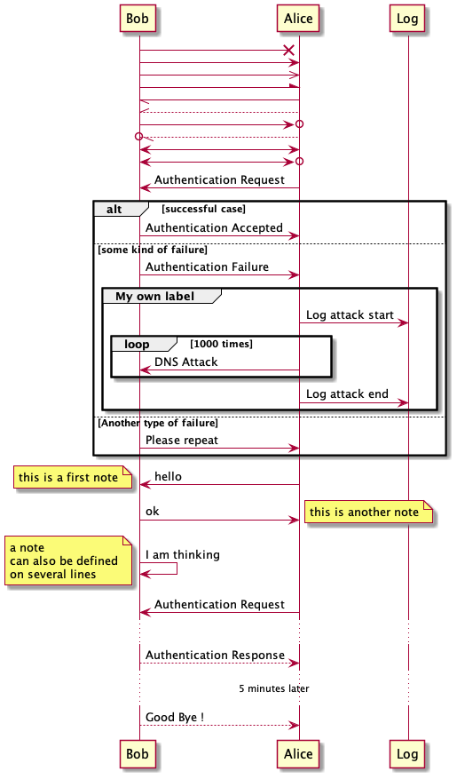

Pavel's Emacs Configuration
After trying to use many distributions I finally decided to start mine from scratch. Many parts of this configuration is copied from Castlemacs distribution.
Literate programming layout is inpired by Protesilaos Stavrou' dotfiles.
Table of Contents
- 1. Reference cards / cheatsheets
- 2. Package archives
- 3. Regenerating Elisp code from Org code
- 4. Server mode
- 5. GUI configuration
- 6. Init
- 7. Working with Buffers
- 8. Custom packages
- 9. Getting help, documentation
- 10. Modifier keys
- 11. Tweaking usage on macOS
- 12. Sane defaults
- 13. Recent files
- 14. Working with lists and hash-maps
- 15. Clipboard / Copy / Yank / Paste / Delete
- 16. Calendar
- 17. Working with text
- 18. File management / Dired
- 19. Undo and redo
- 20. Visuals
- 21. Mode line, mode-line, Status Bar
- 22. Font
- 23. Color themes
- 24. Line numbers
- 25. Keybindings
- 26. Moving around
- 27. Window management
- 28. Project management
- 29. Improving M-x
- 30. Selectrum, Marginalia, Consult for completion
- 31. git, version control system, magit
- 32. Code completion
- 33. Org-mode OrgMode
- 34. Outline-mode - folding and unfolding in Org-mode style
- 35. Eshell
- 36. restclient, major mode for sending HTTP requests
- 37. AnyBar, show circle indicator in macOS menu
- 38. DeadGrep - Searching in multiple files / project
- 39. Formatting code
- 40. Colors in compilation buffers
- 41. Language Server Protocol, LSP
- 42. Error checking
- 43. Elisp
- 44. Golang
- 45. Terraform
- 46. JSON
- 47. YAML
- 48. Ledger, double-entry plain text accounting system
- 49. Clojure
- 50. JavaScript
- 51. TypeScript
- 52. Scala
- 53. Highlighting
- 54. Random helper functions
- 55. Network utilities in Emacs
- 56. Open browser from Emacs
- 57. Blogging
- 58. Recording video
- 59. Jet - transforms between JSON, EDN and Transit json edn clojure clj
- 60. Command log mode - record keystrokes
- 61. Collaborative editing, Floobits, Live Share
- 62. Packages to try someday
- 63. Trying packages
- 64. Reading from s3 using
sqlctool - 65. TODO Typing response
- 66. Emacs-webkit - using Safari from Emacs
- 67. TODO How to explicitly record the mental stack?
- 68. Xah Lee's functions
- 69. PlantUML for creating diagrams
- 70. Convert text into Slack's Alphabet Emojis
- 71. Autoremove asked to delete 15 packages that I use
- 72. Mini frame - display minibuffer at the center of the screen
- 73. Vega - visualisation grammar
- 74. Prism.el - highlight code by depth
- 75. Emacs NES emulator
- 76. Working with S3
- 77. TRAMP
- 78. Finda
- 79. Testing how built-in calc works with Babel
- 80. Toggle function
- 81. Beginend - go to meaningful begin/end of the buffer
1 Reference cards / cheatsheets
2 Package archives
In order for package.el to download packages they should be
specified in repository.
(add-to-list 'package-archives
'("melpa" . "https://melpa.org/packages/"))
3 Regenerating Elisp code from Org code
(use-package emacs
:config
(defun prot/delete-emacs-init ()
(interactive)
(let ((configs "~/.emacs.d/emacs-init.el"))
(when configs
(delete-file configs))))
:hook ((kill-emacs-hook . prot/delete-emacs-init)
;; (kill-emacs-hook . package-quickstart-refresh)
))
4 Server mode
- Needed to edit commit messages from Eshell when running git commands.
(unless (boundp 'server-process) (server-start))
5 GUI configuration
(tool-bar-mode -1) ;; Hide tool bar (scroll-bar-mode -1) ;; Hide scroll bar (fringe-mode '(1 . 1))
6 Init
;; Do run below command from time to time.
;; (package-refresh-contents)
(use-package diminish :ensure t
:after use-package)
(use-package exec-path-from-shell :ensure t
:config (when (memq window-system '(mac ns x))
(exec-path-from-shell-initialize)))
;; adding directories with binaries.
;;(setq exec-path (append exec-path '("/Users/pavel/go/bin"
;; "/usr/local/bin"
;; "/Users/pavel/.pyenv/shims")))
7 Working with Buffers
7.1 Ibuffer
7.1.1 TODO Stop confirmation when killing non-edited buffers
@Prot showed example in one of his videos.
7.2 Bufler
(use-package bufler :ensure t)
7.3 Minibuffer
7.4 Navigation in a buffer
;; Activates by typing s or S then two arbitrary chars and it will ;; jump the cursor to the position. (use-package evil-snipe :ensure t :diminish evil-snipe-local-mode :init (evil-snipe-mode +1) :config (setq evil-snipe-scope 'visible)) (use-package avy :ensure t)
7.5 Unique buffer names
(require 'uniquify) (setq uniquify-buffer-name-style 'forward)
8 Custom packages
Some packages are not in MELPA, so we need either download them manually or have some mechanism doing that for us.
;; Load custom packages (add-to-list 'load-path "~/.emacs.d/packages") (load "visit-source")
8.1 DONE Figure out how to download packages from Github url
Use straight.el.
Flymake-kondor repo has an example how to do it:
(el-get-bundle flymake-kondor :url "https://raw.githubusercontent.com/turbo-cafe/flymake-kondor/master/flymake-kondor.el" (add-hook 'clojure-mode-hook #'flymake-kondor-setup))
9 Getting help, documentation
C-h,F1- open help key drawer
F1 v,describe-varriable- Describe variable
F1 f,describe-function- Describe function
9.1 Info mode
<backspace>- go back
9.2 DONE Integrate DevDocs?
I've found the blog post Accessing Devdocs from Emacs which suggests
using devdocs-lookup package.
It's not published to MELPA, so we need to download it from Github. For now I'll do it manually using curl
and save to custom packages folder ~/code/dotfiles/emacs.d/packages .
;; (use-package devdocs-lookup :ensure t) -- doesn't work since not on MELPA (load "devdocs-lookup") (devdocs-setup)
10 Modifier keys
Control is control, and I also changed Caps Lock to Control in the Keyboard preferences in macOS.
(setq mac-right-command-modifier 'super ;; Both command keys are 'Super' mac-command-modifier 'super mac-option-modifier 'meta ;; Option or Alt is naturally 'Meta' mac-right-option-modifier 'nil) ;; Right Alt (option) can be used to enter symbols like em dashes '—' and euros '€' and stuff.
11 Tweaking usage on macOS
(setq ns-use-native-fullscreen nil)
12 Sane defaults
;; Smoother and nicer scrolling (setq scroll-margin 0 scroll-step 1 next-line-add-newlines t visible-bell nil scroll-conservatively 10000 scroll-preserve-screen-position t mouse-wheel-follow-mouse t mouse-wheel-scroll-amount '(1 ((shift) . 1))) (setq-default auto-save-default nil ;; Don't bother with auto save make-backup-files nil ;; and backups. delete-by-moving-to-trash t ;; Move file to trash instead of removing. indent-tabs-mode nil) ;; Indent using spaces by default ;; Revert (update) buffers automatically when underlying files are changed externally. (global-auto-revert-mode t) (setq inhibit-startup-message t ;; Don't show the startup message... inhibit-startup-screen t ;; ... or screen cursor-in-non-selected-windows nil ;; Hide the cursor in inactive windows ;echo-keystrokes 0.1 ;; Show keystrokes right away, don't show the message in the scratch buffer initial-scratch-message nil ;; Empty scratch buffer ;initial-major-mode 'org-mode ;; Org mode by default in *scratch* buffer sentence-end-double-space nil ;; Sentences should end in one space confirm-kill-emacs 'y-or-n-p ;; y and n instead of yes and no when quitting help-window-select t ;; Select help window so it's easy to quit it with 'q' large-file-warning-threshold 10000000 ;; Warn only when opening files bigger than 10MB ) (fset 'yes-or-no-p 'y-or-n-p) ; y and n instead of yes and no everywhere else (delete-selection-mode 1) ; Delete selected text when typing (global-unset-key (kbd "s-p")) ; Don't print, later =s-p= remapped to open files in the project
13 Recent files
;; (defmacro with-suppressed-message (&rest body)
;; "Suppress new messages temporarily in the echo area and the
;; `*Messages*' buffer while BODY is evaluated."
;; (declare (indent 0))
;; (let ((message-log-max nil))
;; `(with-temp-message (or (current-message) "") ,@body)))
;; (setq save-silently t)
;; (with-suppressed-message (recentf-save-list))
(defun pp/recentf-save-list ()
"Save recentf list supressing message."
(let ((inhibit-message t)) (recentf-save-list)))
(use-package recentf
:init
(recentf-mode 1)
(run-at-time "5 min" 300 'pp/recentf-save-list)
:config
(setq
create-lockfiles nil
recentf-max-menu-items 20
recentf-max-saved-items 1000))
13.1 When switching to Emacs a Warning issued "recentf mode: Non-character input-event"
https://github.com/syl20bnr/spacemacs/issues/5554
- I added
setq create-lockfiles nil, let's see if it helps - looks like not really.
13.2 Opening files
I use pp/visit-or-open function, bound to s-o globally.
(defun pp/visit-or-open ()
"Try to 'visit-source', if fail, then fallback to 'find-file'."
(interactive)
(or
(visit-source)
(call-interactively 'find-file)))
13.2.1 TODO Remove trailing dot from text under cursor before trying to visit-source
Acceptance: having cursor above ~/repos/dotfiles/emacs.d/packages. should open the folder in Dired.
Maybe also don't take into account other Org-related markup, like
./filename.txt.
14 Working with lists and hash-maps
(use-package dash :ensure t)
15 Clipboard / Copy / Yank / Paste / Delete
Shortcuts:
C-y- yank – paste from Emacs' clipboard
;; We need Emacs kill ring and system clipboard to be
;; independent. Simpleclip is the solution to that.
(use-package simpleclip :ensure t
:init (simpleclip-mode 1))
(defun pp/copy-file-name-to-clipboard ()
"Copy the current buffer file name to the clipboard."
(interactive)
(let ((filename (if (equal major-mode 'dired-mode)
default-directory
(file-name-nondirectory (buffer-file-name)))))
(when filename
(simpleclip-set-contents filename)
(message "Copied buffer file name '%s' to the clipboard." filename))))
(defun pp/copy-file-path-to-clipboard ()
"Copy the current buffer file path to the clipboard."
(interactive)
(let ((filepath (if (equal major-mode 'dired-mode)
default-directory
(buffer-file-name))))
(when filepath
(simpleclip-set-contents filepath)
(message "Copied buffer file path '%s' to the clipboard." filepath))))
16 Calendar
https://www.emacswiki.org/emacs/CalendarLocalization
(setq calendar-week-start-day 1)
17 Working with text
17.1 Google Translate
go-translate- for translating word under cursor (with prompt)C-n,C-p- to change language sequences when prompted
(use-package go-translate :ensure t
:config
(setq go-translate-local-language "en"
go-translate-target-language "ru"
go-translate-extra-directions '(("nl" . "en"))))
17.2 Text Editing
fill-paragraph,M-q- wraps long-lined paragraph at 80 pointstranspose-word,M-t- moves word under cursor to the right, respecting non-word symbolñs
;; Expand-region allows to gradually expand selection inside words, ;; sentences, expressions, etc. (use-package expand-region :ensure t) ;; Move-text lines around with meta-up/down. (use-package move-text :ensure t) ;; Wrap text, surround text, surround quotes. (use-package wrap-region :ensure t)
17.3 Join lines
Usually I just use J (evil-join), but if I need to wrap each line into quote,
this is the helper function.
(defun pp/arrayify (start end quote)
"Join lines from START to END, surrounding each line with QUOTE.
Source: https://news.ycombinator.com/item?id=22131815"
(interactive "r\nMQuote: ")
(let ((insertion
(mapconcat
(lambda (x) (format "%s%s%s" quote x quote))
(split-string (buffer-substring start end)) ", ")))
(delete-region start end)
(insert insertion)))
17.4 Wrap lines on a screen, visual line mode
(visual-line-mode 1)
18 File management / Dired
(defun pp/dired-sidebar-view-file ()
"Open file under cursor then switch back to dired-sidebar."
(interactive)
(dired-sidebar-find-file)
(dired-sidebar-jump-to-sidebar))
(defun pp/dired-hook ()
"Hook for 'dired'."
(all-the-icons-dired-mode)
(unless (file-remote-p default-directory)
(auto-revert-mode)))
(use-package dired-single :ensure t)
(use-package dired
:init
(put 'dired-find-alternate-file 'disabled nil)
:hook (dired-mode-hook . pp/dired-hook)
:bind (:map dired-mode-map
(("RET" . dired-single-buffer)
("DEL" . dired-single-up-directory)
("s" . evil-snipe-s)
("S" . evil-snipe-S))))
(use-package dired-sidebar :ensure t
:commands dired-sidebar-toggle-sidebar)
(use-package all-the-icons-dired :ensure t
:diminish)
(use-package treemacs :ensure t)
;; Delete trailing spaces and add new line in the end of a file on save.
(add-hook 'before-save-hook 'delete-trailing-whitespace)
(setq require-final-newline t)
19 Undo and redo
;; Linear undo and redo.
(use-package undo-tree :ensure t
:diminish undo-tree-mode
:init
(progn
(global-undo-tree-mode)
(setq undo-tree-history-directory-alist '(("." . "~/.emacs.d/tmp/undo"))
undo-tree-auto-save-history nil
undo-tree-visualizer-timestamps t
undo-tree-visualizer-diff t
undo-tree-limit 1000000)
(setq-default undo-limit 1000000)))
20 Visuals
(use-package highlight-indent-guides :ensure t :config (setq highlight-indent-guides-method 'character)) (global-hl-line-mode -1) (use-package all-the-icons :ensure t) (use-package rainbow-mode :ensure t)
21 Mode line, mode-line, Status Bar
;; (use-package smart-mode-line :ensure t
;; :config
;; (setq sml/theme 'light
;; sml/name-width 40
;; sml/mode-width 'full
;; sml/no-confirm-load-theme t
;; sml/not-modified-char " "
;; sml/numbers-separator "")
;; (add-to-list 'sml/replacer-regexp-list '("^~/go/src/github.com/FindHotel/" ":GoFH:") t)
;; (add-to-list 'sml/replacer-regexp-list '("^~/repos/dotfiles/emacs.d/" ":ED:") t)
;; (sml/setup))
;; (use-package mood-line
;; :config
;; (mood-line-mode 1))
;; (use-package doom-modeline
;; :ensure t
;; :init (doom-modeline-mode 1)
;; :config
;; (setq doom-modeline-minor-modes nil
;; doom-modeline-height 0 ;; uses actual height of chars
;; doom-modeline-bar-width 1
;; doom-modeline-enable-word-count t
;; doom-modeline-buffer-encoding nil))
;; (use-package ns-auto-titlebar
;; :config
;; (when (eq system-type 'darwin) (ns-auto-titlebar-mode)))
;; Hide minor modes from modeline.
(use-package rich-minority :ensure t
:config
(add-to-list 'rm-blacklist " $") ;; rich-minority itself
(add-to-list 'rm-blacklist " WE")
(add-to-list 'rm-blacklist " Ind") ;; org-indent-mode
(add-to-list 'rm-blacklist " ElDoc") ;; Emacs Lisp documentation
(add-to-list 'rm-blacklist " fix") ;; eslintd-fix-mode
(add-to-list 'rm-blacklist " s3ed")
(rich-minority-mode))
(setq-default echo-bell-background "Gray")
(load "echo-bell")
(echo-bell-mode)
(message mode-name) (message mode-line-modes)
21.0.1 TODO mode-line resets when locally
For some reason mode-line turns to contain only buffer name after some time, probably some package/mode sets it. The example below resets it to default original value.
I was suspecting that this happens when I open a Go file, probably something with go-mode-hook.
Can't reproduce on a fresh opened Emacs.
Now I suspect eglot.
(describe-variable 'mode-line-format)
(setq-default mode-line-format
'("%e" mode-line-front-space
mode-line-mule-info mode-line-client mode-line-modified
mode-line-remote mode-line-frame-identification
mode-line-buffer-identification " " mode-line-position
evil-mode-line-tag (vc-mode vc-mode)
" " mode-line-modes mode-line-misc-info mode-line-end-spaces))
(defun pp/reset-mode-line-format ()
"Klll local variable mode-line-format resetting it to the global value."
(interactive)
(kill-local-variable 'mode-line-format))
(defun pp/toggle-hide-mode-line ()
"Toggle mode-line visibility in current buffer.
Source: https://gist.github.com/rnkn/a522429ed7e784ae091b8760f416ecf8"
(interactive)
(if mode-line-format
(setq-local mode-line-format nil)
(kill-local-variable 'mode-line-format)))
22 Font
(defun pp/set-font (font size) "Use FONT with SIZE if it's present in the system." (when (member font (font-family-list)) (set-face-attribute 'default nil :font (format "%s %d" font size)))) ;; (pp/set-font "JetBrains Mono" 12) (pp/set-font "PragmataPro" 14) ;;(pp/set-font "Iosevka" 14)
23 Color themes
(defun pp/disable-all-themes () "Disable all custom enabled themes. Found on http://www.greghendershott.com/2017/02/emacs-themes.html." (interactive) (mapc #'disable-theme custom-enabled-themes)) (defun pp/load-theme (theme) "Load THEME as current theme." (interactive "stheme: ") (pp/disable-all-themes) (load-theme theme t) (pp/set-font "PragmataPro" 14) ;(pp/set-font "Iosevka" 14) ) (setq-default line-spacing 2) ;; (use-package ayu-theme :ensure t) ;; (use-package solarized-theme) ;; (use-package doom-themes) ;; (use-package ample-theme :ensure t) ;; (use-package quasi-monochrome-theme :ensure t) ;; (use-package monochrome-theme :ensure t) (use-package modus-themes :ensure t) (use-package faff-theme :ensure t) ;; (use-package horizon-theme :ensure t) ;; 256 colors in term (use-package eterm-256color :hook (term-mode-hook . eterm-256color-mode)) (blink-cursor-mode 0) ;; disable blinking cursor
;; light themes (pp/load-theme 'leuven) (pp/load-theme 'tsdh-light) (pp/load-theme 'monochrome-bright) (progn (setq modus-operandi-theme-no-mixed-fonts t) (pp/load-theme 'modus-operandi)) (pp/load-theme 'whiteboard) ;; sepia themes (pp/load-theme 'faff) ;; dark themes (pp/load-theme 'ayu-dark) (pp/load-theme 'wombat) (pp/load-theme 'tsdh-dark) (pp/load-theme 'ayu-grey) (pp/load-theme 'monochrome) (pp/load-theme 'quasi-monochrome) (progn (setq modus-vivendi-theme-no-mixed-fonts t) (pp/load-theme 'modus-vivendi)) (pp/load-theme 'ample) (pp/load-theme 'ample-flat)
(setq-default
header-line-format
(list
" "
'(:eval (let ((name (buffer-name)))
(cond ((not buffer-file-truename)
(propertize name 'face 'bold))
((equal name (file-name-nondirectory buffer-file-truename))
(concat (propertize
(f-filename buffer-file-truename)
'face 'bold)
" "
(f-dirname buffer-file-truename)
"/…"))
(t
(concat (propertize name 'face 'bold)
" "
buffer-file-truename)))))
;; Right aligned
'(:eval (let* ((right-text (format-mode-line mode-name)))
(concat (propertize
" " 'display
`((space :align-to (- (+ right right-fringe right-margin)
,(+ 3 (string-width right-text))))))
right-text)))))
23.1 Faff theme changed highlighting of Org headers
On in the commit 8bf375a in faff theme the
23.2 Switch between dark and light mode in macOS
System appearance change in Emacs Plus.
emacs-mac-port does have this built-in.
emacs-plus allows to add hook on changing system appearance.
(defun pp/apply-appearance (appearance)
"Load theme, taking current system APPEARANCE into consideration."
(mapc #'disable-theme custom-enabled-themes)
(pcase appearance
('light (progn (setq modus-operandi-theme-no-mixed-fonts t)
(load-theme 'modus-operandi t)))
('dark (progn (setq modus-vivendi-theme-no-mixed-fonts t)
(load-theme 'modus-vivendi t))))
(pp/set-font "PragmataPro" 14))
(add-hook 'ns-system-appearance-change-functions #'pp/apply-appearance)
(pp/apply-appearance 'dark) (pp/apply-appearance 'light)
24 Line numbers
(defun pp/line-numbers-on () "Turn on showing line numbers." (interactive) (setq display-line-numbers 'relative)) (defun pp/line-numbers-off () "Turn on showing line numbers." (interactive) (setq display-line-numbers nil)) (add-hook 'text-mode-hook #'pp/line-numbers-on) (add-hook 'prog-mode-hook #'pp/line-numbers-on) (add-hook 'org-mode-hook #'pp/line-numbers-off)
25 Keybindings
;; Use ESC as universal get me out of here command
(define-key key-translation-map (kbd "ESC") (kbd "C-g"))
(use-package which-key :ensure t
:diminish which-key-mode
:config
(which-key-mode)
(which-key-setup-side-window-bottom)
;;(which-key-setup-side-window-right-bottom)
(setq which-key-sort-order 'which-key-key-order-alpha
which-key-idle-delay 0.5))
25.1 General, package for setting keybindings
(use-package general :ensure t) (general-define-key ;;"<tab>" 'org-cycle "s-s" 'save-buffer "s-S" 'write-file ;; save as "s-a" 'mark-whole-buffer ;; select all "s-z" 'undo-tree-undo "s-Z" 'undo-tree-redo "s-;" 'comment-line "s-." 'company-complete ;; windows "s-1" 'delete-other-windows "s-2" 'split-window-below "s-3" 'split-window-right "s-w" 'delete-window ;; going around "s-j" 'previous-buffer "s-k" 'next-buffer "s-b" 'consult-buffer "s-n" 'switch-to-buffer ;; searching "C-s" 'isearch-forward "C-r" 'isearch-backward "C-l" 'consult-line "C-;" 'avy-goto-char "s-r" 'consult-recent-file "s-o" 'pp/visit-or-open "s-p" 'project-find-file "s-f" 'pp/consult-ripgrep ;; fuzzy search in the current project "s-F" 'deadgrep ;; modes "s-t" 'eshell "s-g" 'magit-status "M-x" 'execute-extended-command ;; function keys "<f5>" 'deadgrep "<f6>" 'flymake-show-diagnostics-buffer "<f8>" 'dired-sidebar-toggle-sidebar ;; text manipulation "s-'" 'er/expand-region "s-\\" 'er/contract-region "<M-up>" 'move-text-up "<M-down>" 'move-text-down) (general-define-key :states '(normal) "C-k" 'evil-scroll-up "C-j" 'evil-scroll-down "C-r" 'isearch-backward ;"*" 'swiper-thing-at-point ) (general-define-key :states '(normal) :prefix "SPC" ;"1" 'pp/switch-to-scratch-buffer ;"2" 'lispy-arglist-inline "a" 'org-agenda "," 'org-insert-structure-template "[" 'flymake-goto-previous-error "]" 'flymake-goto-next-error "d" 'projectile-find-dir ;'counsel-projectile-find-dir "j" 'dired-jump "k" 'kill-this-buffer "n" 'deft ; mnemonics - notes "p" 'project-switch-project ;'counsel-projectile-switch-project "h" 'highlight-symbol ;; mnemonics - highlight "l" 'lispy-mode "w" 'visual-line-mode "t" 'projectile-test-project) (general-define-key :states '(normal) :prefix "C-x" "C-o" 'find-file) (general-define-key :states '(visual) "SPC" 'er/expand-region "DEL" 'er/contract-region) (general-define-key :states '(insert) "C-a" 'beginning-of-line "C-e" 'end-of-line "C-n" 'next-line "C-p" 'previous-line)
25.2 Commenting/uncommenting
M-;,comment-dwim- in Command mode will add comment to the end of line, in Visual mode will comment the whole line
C-x C-;,s-;,comment-line- will comment the whole line, but works strange in Org Babel
Good description in http://ergoemacs.org/misc/emacs_comment-line_vs_comment-dwim.html.
26 Moving around
26.1 Evil
(use-package evil ;; :init (setq evil-want-C-u-scroll t) ;; I'm using C-u as universal argument instead. :config (evil-set-undo-system 'undo-tree) ;; Evil made undo-tree optional, I'm setting it back here. Source: https://github.com/syl20bnr/spacemacs/issues/14036 (evil-mode 1)) (use-package evil-surround :ensure t :config (global-evil-surround-mode 1))
26.2 Xah Fly Keys
(use-package xah-fly-keys
:commands xah-fly-keys
:config
;; (xah-fly-keys 1)
(xah-fly-keys-set-layout 'qwerty))
26.3 Moving back
(use-package goto-last-change
:ensure
:bind ("<s-backspace>" . goto-last-change))
27 Window management
(setq split-height-threshold 80 split-width-threshold 160)
28 Project management
(use-package projectile :ensure t
:config
(setq projectile-git-submodule-command "")
(setq projectile-mode-line-function '(lambda () (format " #%s" (projectile-project-name))))
(projectile-mode +1))
29 Improving M-x
(use-package smex :ensure t)
30 Selectrum, Marginalia, Consult for completion
Replaces Ivy+Counsel.
30.1 Selectrum
(use-package selectrum :ensure t :init (selectrum-mode)) (use-package selectrum-prescient :ensure t :init (selectrum-prescient-mode +1)) (use-package completing-read-xref :straight (completing-read-xref :type git :host github :repo "travitch/completing-read-xref.el") :commands (completing-read-xref-show-xrefs completing-read-xref-show-xrefs) :init (setq xref-show-definitions-function 'completing-read-xref-show-defs))
30.2 Prescient - Frecency-based candidate sorting, also offers filtering
(use-package prescient :ensure t :config (prescient-persist-mode +1))
30.3 Marginalia - additional information on completion
(use-package marginalia :ensure t
:init
(marginalia-mode)
(setq marginalia-annotators '(marginalia-annotators-heavy marginalia-annotators-light)
marginalia-truncate-width 300
marginalia-separator-threshold 3000
marginalia-margin-threshold 135))
30.3.1 TODO Fix wrong indentation in M-x when Emacs frame is full-screen on 27" display
Can't make it working on both 27" display and on MacBook display.
(progn
(marginalia-mode -1)
(setq marginalia-truncate-width 300
marginalia-separator-threshold 3000
marginalia-margin-threshold 165)
(marginalia-mode))
30.4 Consult
(use-package consult :ensure t) ;(use-package icomplete-vertical :ensure t ; :init (icomplete-vertical-mode)) (defun pp/consult-ripgrep () "Launches ripgrep in the current project root." (interactive) (consult-ripgrep (project-root (project-current))))
30.4.1 Consult is broken after upgrade
consult-selectrumis not longer exists, bundled inside consult, but it not symlinked when installing with straight.
Error in post-command-hook (selectrum–minibuffer-post-command-hook): (wrong-type-argument number-or-marker-p nil)
Error in post-command-hook (icomplete-post-command-hook): (wrong-type-argument number-or-marker-p nil)
31 git, version control system, magit
(use-package magit :ensure t
:hook (magit-mode-hook . turn-off-evil-snipe-override-mode))
(use-package forge :ensure t
:after magit)
(use-package ghub :ensure t
:after magit)
(use-package git-gutter :ensure t
:diminish
:init (global-git-gutter-mode 't)
:config
(custom-set-variables
'(git-gutter:modified-sign "~") ;; two space
'(git-gutter:added-sign "+") ;; multiple character is OK
'(git-gutter:deleted-sign "-"))
(set-face-background 'git-gutter:modified "purple") ;; background color
(set-face-background 'git-gutter:added "green")
(set-face-background 'git-gutter:deleted "red")
(set-face-foreground 'git-gutter:added "white")
(set-face-foreground 'git-gutter:deleted "white"))
(forge-pull) (ghub-request "GET" "/user")
32 Code completion
(use-package company :ensure t :diminish :hook (prog-mode-hook . company-mode))
33 Org-mode OrgMode
Useful keybindings:
C-c C-l,org-insert-link- if on url - uses it and prompts for description. Docs
(describe-variable 'org-version)
(use-package org
:config
(setq
org-startup-indented t
org-src-tab-acts-natively t
org-src-preserve-indentation t
org-src-fontify-natively t
org-log-into-drawer t
org-log-done 'time
org-export-backends '(html md)
org-support-shift-select t
org-directory "~/Documents/Notes"
org-agenda-files '("~/Documents/Notes/pavel.org"
"~/.emacs.d/emacs-init.org"
"~/Documents/Projects/Blog/Clojure.org"
"~/code/fh/search-api/README.org"
"~/code/fh/hotel-explorer/README.org"
"~/Documents/FindHotel/fh.org")))
(use-package org-bullets :ensure t
:hook (org-mode-hook . org-bullets-mode))
33.1 Org-babel, Babel, Org Babel OrgBabel
Babel enables literate programming in Org Mode.
<s-TAB- start source block
<e-TAB- start example block
C-c C-c- execute block
C-c '- edit this block in a separate buffer
(setq-default org-confirm-babel-evaluate nil) (org-babel-do-load-languages 'org-babel-load-languages '((clojure . t) (emacs-lisp . t) (plantuml . t) (shell . t) (python . t) (restclient . t) (calc . t)))
33.1.1 TODO Setup org-mode-babel for sql files
- Should be able to run SQL in Snowflake
33.1.2 DONE Setup org-mode-babel for shell
ls ~
33.1.3 TODO Setup org-mode-babel for clojure
(+ 2 3) (defn foo [x] x)
33.1.4 Example blocks
printf "Please wait (this can take a while)...\n" sleep 5 printf "Done!\n"
33.1.5 TODO Try ob-async
Asynchronous src_block execution for org-babel https://github.com/astahlman/ob-async
33.1.6 How to insert source code block?
https://emacs.stackexchange.com/a/19946
- In Org Mode prior to 9.2
- Insert
<sand pressTAB - After 9.2
C-c C-,
After upgrading to Emacs 27.1 <s and <e expansions stopped
working, the new shortcut is C-c C-, To get <s and <e working,
this answer on SO suggests using the following snippet.
(require 'org-tempo) ; (add-to-list 'org-modules 'org-tempo)
but for some reason it didn't work for me, so I stick with C-c C-,
and also bind it to SPC , in Evil Normal mode. As of
<s works again.
33.2 Org-agenda, Ora Agenda OrgAgenda
To setup category either add #+CATEGORY to the file or use
CATEGORY property of an item. To setup a property use
org-set-property.
33.2.1 DONE How to split agenda vertically?
There is such configuration from Castlemacs which did that damage:
;; This is rather radical, but saves from a lot of pain in the ass. ;; When split is automatic, always split windows vertically (setq split-height-threshold 0) (setq split-width-threshold nil)
https://emacs.stackexchange.com/questions/39034/prefer-vertical-splits-over-horizontal-ones https://www.gnu.org/software/emacs/manual/html_node/eintr/See-variable-current-value.html
33.2.2 TODO Alphapapa published org-super-agenda package to bring it to the next level
33.3 Org-QL, a query language for Org files OrgQL
33.3.1 TODO Try org-ql
33.4 DONE How to automatically add creation metadata timestamp to Org-mode entry?
Links:
- https://orgmode.org/manual/Creating-Timestamps.html
- https://stackoverflow.com/questions/12262220/add-created-date-property-to-todos-in-org-mode
Use org-expiry-insert-created function.
(load "org-expiry") (setq org-expiry-created-property-name "CREATED" ; Name of property when an item is created org-expiry-inactive-timestamps t ; Don't have everything in the agenda view )
33.5 DONE Saving of fh.org (272K) takes significant time
The problem was in undo-tree mode which overtime grew significant
amount of undo changes.
34 Outline-mode - folding and unfolding in Org-mode style
;; (use-package outshine :ensure t) - way too complex
;; (use-package outline-magic :ensure t) - use org-cycle instead
;; :config (setq-default outline-promotion-headings '("# * " "# ** " "# *** ")))
(setq-default outline-regexp "[*#]+")
(use-package emacs
:config
(defun pp/outline-minor-mode-hook ()
(general-define-key
:keymaps 'local
"<tab>" 'org-cycle
"M-p" 'outline-previous-heading
"M-n" 'outline-next-heading))
(add-hook 'outline-minor-mode-hook #'pp/outline-minor-mode-hook))
(describe-variable 'outline-promotion-headings)
35 Eshell
Links
- https://ambrevar.xyz/emacs-eshell/
- https://www.reddit.com/r/emacs/comments/6y3q4k/yes_eshell_is_my_main_shell/
(defun pp/eshell-prompt-function ()
"Eshell prompt function."
(format "%s\nλ " (abbreviate-file-name (eshell/pwd))))
(use-package eshell
:config
(setq-default eshell-history-size 100000
eshell-prompt-regexp "^λ "
eshell-prompt-function #'pp/eshell-prompt-function))
(defun pp/eshell-mode-hook ()
"Eshell mode hook."
(require 'eshell-z))
(use-package eshell-z :ensure t
:hook (eshell-mode-hook . pp/eshell-mode-hook))
(defun eshell-new ()
"Open a new instance of eshell."
(interactive)
(eshell 'N))
(use-package eshell-syntax-highlighting :ensure t
:after esh-mode
:config
;; Disable in all Eshell buffers by default.
(eshell-syntax-highlighting-global-mode -1))
(eshell-syntax-highlighting-global-mode -1) (eshell-syntax-highlighting-global-mode +1)
35.1 How to open a file in emacs?
find-file <filename> => (find-file "<filename>")
35.2 Setting environment variables
(setenv "SNOWSQL_ACCOUNT" "some-value.eu-west-1")
36 restclient, major mode for sending HTTP requests
Although now I try to use Babashka instead.
Another alternative - Elisp package https://github.com/tkf/emacs-request.
(use-package restclient :ensure t
:mode (("\\.http\\'" . restclient-mode)))
(use-package ob-restclient :ensure t) ;; support in org-babel
;(load "restclient-jq") - haven't manage to make it working, using Clojure instead for dealing with JSON
37 AnyBar, show circle indicator in macOS menu
(use-package anybar :ensure t)
38 DeadGrep - Searching in multiple files / project
grep / ripgrep / ag / ack / pt
(defun pp/deadgrep-view-file ()
"View result under cursor in other window."
(interactive)
(deadgrep-visit-result-other-window)
(other-window 1))
(use-package deadgrep :ensure t
:bind (:map deadgrep-mode-map
("v" . pp/deadgrep-view-file)))
;; TODO: maybe setup next-error-follow-minor-mode as a hook?
38.1 Keybindings in Deadgrep buffer
M-n,M-p- move to next/previous file
n,C-n,C-p- move to next/previous line
o- open matched file on matched line
v- view matched file on matched line (keeping focus in Deadgrep buffer)
39 Formatting code
(use-package format-all :ensure t)
39.1 Lispy - working with lisp s-expressions
Useful keybindings in Lispy:
S,lispy-stringify- turn s-expr to string, useful fur turning JSON to string
C-u ",lispy-quotes- when inside quote string - unquote
C-8- lispy-parens-down
C-2,SPC-2,lispy-arglist-inline- C-2 doesn't work, so I bound it to
SPC-2 G, =special-lispy-goto-local- go to local def
M.=- go to symbol definition
d- go to other side of sexp
C-,- lispy-kill-at-point
m- mark current sexp, alternative to evil's
%
Avy-based movements, work in a current sexp
a- starts avy to go to symbol and mark it
H- starts avy to replace symbol
Example configuration with keybindings.
(defun pp/lispy-mode-hook ()
"Turn on lispy, turn off evil-mode locally."
(interactive)
(lispy-mode 1))
(use-package lispy :ensure t
:hook ((emacs-lisp-mode-hook . pp/lispy-mode-hook)
(clojure-mode-hook . pp/lispy-mode-hook))
:config (setq lispy-compat '(edebug cider)))
39.2 Dealing with pairs - smartparens
Turning off smartparens to not interact with lispy.
;;(use-package smartparens :ensure t ;; :diminish ;; :config ;; (smartparens-global-mode)) ;; smartparens ;; "<s-down>" 'sp-down-sexp ;; "<s-up>" 'sp-up-sexp
39.3 TODO Setup sql formatting
Mandatory:
format-all-buffershould be able to invoke it- Need to process multiple SQL statements in a file
- Static binary (go?), so no python dependencies
- Good defaults
Nice to have:
- Should understand templating (highly unlekely)
40 Colors in compilation buffers
(add-hook 'compilation-mode-hook 'ansi-color-for-comint-mode-on) (add-to-list 'comint-output-filter-functions 'ansi-color-process-output) (defun pp/colorize-buffer () "Replace ANSI color sequences with actual colors in current buffer. Source: https://lists.gnu.org/archive/html/help-gnu-emacs/2013-10/msg00229.html" (interactive) (read-only-mode -1) (ansi-color-apply-on-region (point-min) (point-max)) (read-only-mode +1)) (add-hook 'compilation-filter-hook 'pp/colorize-buffer)
41 Language Server Protocol, LSP
(use-package eglot :ensure t :commands eglot) (use-package dumb-jump :ensure t) ;; go to definition
42 Error checking
Two main packages providing minor mode for error checks:
- flymake
- built-in into Emacs
- flycheck
- competitor that gained lots of popularity recently
42.1 Flymake
I found this configuration in flymake-kondor's README:
(use-package flymake :hook (prog-mode . (lambda () (flymake-mode t))) :config (remove-hook 'flymake-diagnostic-functions #'flymake-proc-legacy-flymake))
42.2 Flycheck
;;(use-package flycheck ;; :init (global-flycheck-mode)) ;; (use-package flymake-easy)
43 Elisp
(use-package rainbow-delimiters :ensure t ; :hook (prog-mode-hook . rainbow-delimiters-mode) ) (show-paren-mode) (use-package elisp-format :commands elisp-format-region) (use-package paredit :ensure t :diminish) (add-hook 'emacs-lisp-mode-hook 'flymake-mode)
- Libraries for programming
- https://github.com/emacs-tw/awesome-emacs#programming
43.1 Dash - A modern list api for Emacs
https://github.com/magnars/dash.el
(use-package dash :ensure t)
(-map (lambda (n) (* n n)) '(1 2 3 4))
43.2 S - working with strings
https://github.com/magnars/s.el
(use-package s :ensure t)
(s-join "," '("asdf" "qwer" "fdsa"))
(s-split-words "fooBar")
43.3 HT - working with HashTables
(use-package ht :ensure t)
(let ((example (ht ("Foo" "Bar")
("a" "b"))))
(s-join "&" (-map (lambda (kv) (s-join "=" kv))
(ht-items example))))
43.4 Example using Elisp
(json-encode
(list :requests
(let ((params (list (ht ("hitsPerPage" "1")
("filters" "origin:IND AND anchorId:place-432123"))
(ht ("hitsPerPage" "1")
("filters" "visitorId:pavel"))
(ht ("hitsPerPage" "1")
("filters" "userAgent:googlebot"))))
(req (lambda (p)
(ht (:indexName "prod_banapi_v1")
(:params (url-hexify-string
(s-join "&" (-map (lambda (kv) (s-join "=" kv))
(ht-items p)))))))))
(-map req params))))
(object :foo :bar)
(json-encode (ht (:hitsPerPage "1")
(:filters "userAgent:googlebot")))
(json-serialize '(:foo 1 :qwer 2))
(json-encode '(:requests (list 1 2 3 4)))
(json-encode '(:requests (list ) :foo :bar (3 4)))
(let* ((plus-one (lambda (n) (+ n 1)))
(plus-two (lambda (x) (funcall plus-one (funcall plus-one x)))))
(funcall plus-two 3))
(lexical-let*
((plus-one (lambda (n) (+ n 1)))
(plus-two (lambda (x) (plus-one (plus-one x)))))
(plus-two 3))
(let* ((y 1)
(z y))
(list y z))
(json-encode
(list :requests
(let ((params (list (ht (:hitsPerPage "1")
(:filters "origin:IND AND anchorId:hotel-12346"))
(ht (:hitsPerPage "1")
(:filters "visitorId:pasha"))))
(req (lambda (p)
(ht (:indexName "prod_banapi_v1")
(:params (url-encode-url
(s-join "&" (-map (lambda (kv) (s-join "=" kv))
(ht-items p)))))))))
(-map req params))))
(ht (:foo :bar)
(:fo1 :bar)
(:fo2 :bar)
(:fo3 :bar))
44 Golang
(defun pp/go-mode-hook ()
"Hook for 'go-mode'."
(add-hook 'before-save-hook 'gofmt-before-save)
(setq
tab-width 4
indent-tabs-mode 1)
;; (flymake-mode)
(general-define-key
:states '(normal)
:prefix "g"
"d" 'xref-find-definitions
"h" 'godoc-at-point))
(use-package go-mode
:config
(setq-default
gofmt-command "goimports"
;; gofmt-args (list "-s")
)
:hook (go-mode-hook . pp/go-mode-hook))
(use-package gotest :ensure t
:config
(setq-default go-test-args "-timeout 2s"))
45 Terraform
Since somewhere in November 2020 resource names started showing in pink, which I can't distinguish on any background, so I change it to be the same as resource type.
(use-package terraform-mode :ensure t :config (setq terraform--resource-name-face 'terraform--resource-type-face) :hook (terraform-mode-hook . terraform-format-on-save-mode))
46 JSON
(defun pp/json-mode-hook ()
(setq
tab-width 2
js-indent-level 2
indent-tabs-mode nil))
(use-package json-mode :ensure t
:hook (json-mode-hook . pp/json-mode-hook))
Related:
46.1 Validating if JSON is valid
(defun pp/selection-valid-json? (beg end) "Validates selection from BEG to END to be a valid JSON." (interactive "r") (json-read-from-string (buffer-substring-no-properties beg end)))
(json-read-from-string "{\"a\": 1}")
46.2 TODO Try json-pointer
47 YAML
(use-package yaml-mode :ensure t)
48 Ledger, double-entry plain text accounting system
;(use-package ledger-mode :ensure t)
49 Clojure
(use-package clojure-mode :ensure t :config (setq clojure-align-forms-automatically t)) (require 'ob-clojure) ;; enable clojure in org-babel
49.1 How to develop in Clojure (CIDER)
CIDER Docs: https://docs.cider.mx/cider/index.html
cider-eval-defun-at-point(C-c C-c)- on S-exp will evaluate outer S-exp, both in Evil Normal and Insert modes
cider-eval-last-sexp(C-c C-e)- having cursor after S-exp will evaluate previous one, sometimes doesn't work as expected in Evil Normal mode, use Insert mode instead
cider-clojuredocs(C-c C-d C-c)- open documentation from ClojureDocs. Default search term is that under cursor
(use-package cider :ensure t)
49.2 inf-clojure
https://github.com/clojure-emacs/inf-clojure
(use-package inf-clojure :ensure t)
49.3 Useful helper functions
;; change current namespace
(in-ns 'hello.cruel-world)
(filter #(clojure.string/includes? % "json")
(map str (all-ns)))
(filter #(and
(not (clojure.string/includes? % "cider"))
(not (clojure.string/includes? % "nrepl"))
(not (clojure.string/includes? % "clojure")))
(map str (all-ns)))
(filter #(complement (or (map
clojure.string/includes? ["cider" "nrepl" "clojure"]))
(map str (all-ns)))
49.4 Linter - clj-kondo
(use-package flymake-quickdef :ensure t) (use-package flymake-kondor :ensure t :hook (clojure-mode-hook . flymake-kondor-setup))
(executable-find "clj-kondo")
49.5 ClojureScript
49.5.1 TODO Try re-jump for re-frame
49.6 4Clojure
(use-package 4clojure :ensure t)
(defun endless/4clojure-check-and-proceed ()
"Check the answer and show the next question if it worked."
(interactive)
(unless
(save-excursion
;; Find last sexp (the answer).
(goto-char (point-max))
(forward-sexp -1)
;; Check the answer.
(cl-letf ((answer
(buffer-substring (point) (point-max)))
;; Preserve buffer contents, in case you failed.
((buffer-string)))
(goto-char (point-min))
(while (search-forward "__" nil t)
(replace-match answer))
(string-match "failed." (4clojure-check-answers))))
(4clojure-next-question)))
50 JavaScript
(defun pp/js-mode-hook ()
"Hook for 'js-mode'."
(setq
tab-width 2
indent-tabs-mode nil)
(flymake-mode))
(use-package js-mode
:hook (js-mode-hook . pp/js-mode-hook)
:config
(setq js-indent-level 2))
51 TypeScript
(use-package typescript-mode :ensure t
:config
(setq typescript-indent-level 2))
(use-package tide :ensure t
:config
(setq tide-format-options
(list :insertSpaceAfterFunctionKeywordForAnonymousFunctions t
:placeOpenBraceOnNewLineForFunctions nil)))
52 Scala
(defun pp/scala-mode-hook ()
"Hook for 'scala-mode'."
(general-define-key :states '(normal) :prefix "g"
"h" 'eglot-help-at-point))
(use-package scala-mode
:mode "\\.s\\(cala\\|bt\\)$"
:hook (scala-mode-hook . pp/scala-mode-hook))
;; Enable sbt mode for executing sbt commands
(use-package sbt-mode
:commands (sbt-start sbt-command)
:config
;; WORKAROUND: https://github.com/ensime/emacs-sbt-mode/issues/31
;; allows using SPACE when in the minibuffer
(substitute-key-definition
'minibuffer-complete-word
'self-insert-command
minibuffer-local-completion-map)
;; sbt-supershell kills sbt-mode: https://github.com/hvesalai/emacs-sbt-mode/issues/152
(setq sbt:program-options '("-Dsbt.supershell=false")))
53 Highlighting
(defun pp/highlight-symbol-hook ()
"Hook for highlighting symbols."
(highlight-symbol-nav-mode)
(highlight-symbol "TODO:"))
(use-package highlight-symbol :ensure t
:hook ((prog-mode-hook . pp/highlight-symbol-hook)
(text-mode-hook . pp/highlight-symbol-hook)
(org-mode-hook . pp/highlight-symbol-hook))
:config
(setq
highlight-symbol-colors
(quote
("light goldenrod" "deep sky blue" "light coral" "chocolate" "orange" "red" "orange red"))
highlight-symbol-foreground-color "black"))
53.1 Color identifiers mode
Don't remember what's this.
(use-package color-identifiers-mode :ensure t)
54 Random helper functions
(defun pp/switch-to-scratch-buffer () "Switch to *scratch* buffer." (interactive) (switch-to-buffer "*scratch*"))
55 Network utilities in Emacs
(telnet "ya.ru" 80) (ping "ya.ru") (telnet "inbucket.nyancat.gcp.in-gr.ru" 443)
56 Open browser from Emacs
(start-process "" nil "open" "http://clojure.org") (xwidget-webkit-browse-url "http://clojure.org")
57 Blogging
How to run a blog from Emacs with minimum overhead efforts.
Check ./How-do-I-blog.org file for details.
(defun pp/export-to-blog ()
"Converts current Org buffer to html and moves it to blog sources folder."
(interactive)
(let ((filename (org-html-export-to-html)))
(rename-file filename "~/Documents/Projects/pavel-popov.github.io/" t)))
57.1 Deft - a package for dealing with text notes
Similar to ideas of Notational Velocity (and Wiki) to have a plain list of notes allowing quickly filtering and searching for them.
However, there are some caveats of using Deft:
deft-auto-save-intervalis by default set to 1, which triggers autosaving the current buffer every 1 second. Since I also have removing trailing whitespaces on save enabled, that setting were actually preventing from writing any text, cutting spaces. Setting it to 0 solves the problem, really insane default value.
(use-package deft :ensure t
:config
(setq
deft-auto-save-interval 0
deft-extensions '("org")
deft-default-extension "org"
deft-use-filename-as-title nil
deft-use-filter-string-for-filename t
deft-org-mode-title-prefix t
deft-file-naming-rules
'((noslash . "-")
(nospace . "-")
(case-fn . capitalize))
deft-directory "/Users/pavel/Documents/Projects/Blog"))
When creating a new file using deft-new-file and above configuration
it uses deft filter value for the title and filename. The problem is
that I rarely use Deft' filtering, but instead use C-s to run
Swiper. So, here is a custom function for creating a new note, which
prompts for a string, sets Deft filter to it and creates new file in
Deft directory.
(defun pp/deft-new-file (title) "Create new note with provided TITLE using Deft." (interactive "sTitle for a new note: ") (deft-filter title t) (deft-new-file))
57.1.1 NotDeft
Spin-off of Deft for searching in a set of folders and use Deft-inspired UI.
57.2 Smart Notes / Slip-Box / ZettelKasten
That topic gained lots of popularity in Summer 2020, including several posts on HN and Reddit, in particular ZettelDeft package that uses Deft as file manager and creates backlinks between notes. I tried to use it and found too complicated for my needs, so decided not use it for now.
;; (use-package zetteldeft ;; :after deft ;; :config ;; (zetteldeft-set-classic-keybindings))
58 Recording video
59 Jet - transforms between JSON, EDN and Transit json edn clojure clj
(defun pp/jet-edn-prettify ()
"Prettyfy selection of buffer using jet."
(interactive)
(shell-command-on-region
(region-beginning)
(region-end)
"jet --pretty --edn-reader-opts '{:default tagged-literal}'"
(current-buffer)
t
"*jet error buffer*"
t))
(defun pp/jet-edn-to-json ()
"Prettyfy selection of buffer using jet."
(interactive)
(shell-command-on-region
(region-beginning)
(region-end)
"jet --pretty --from edn --to json"
(current-buffer)
t
"*jet error buffer*"
t))
(defun pp/jet-json-to-edn ()
"Prettyfy selection of buffer using jet."
(interactive)
(shell-command-on-region
(region-beginning)
(region-end)
"jet --pretty --from json --to edn --keywordize '#((if (str/includes? % \" \") str keyword) %)'"
(current-buffer)
t
"*jet error buffer*"
t))
60 Command log mode - record keystrokes
(use-package command-log-mode :ensure t)
61 Collaborative editing, Floobits, Live Share
(use-package floobits :ensure t)
62 Packages to try someday
- Productivity tips
- https://news.ycombinator.com/item?id=22129636
- Literate Devops
- http://howardism.org/Technical/Emacs/literate-devops.html Discussion: https://news.ycombinator.com/item?id=16559004
- Purpose
- Manage Windows and Buffers According to Purposes https://github.com/bmag/emacs-purpose
63 Trying packages
(use-package try :ensure t)
64 Reading from s3 using sqlc tool
(defun pp/sqlc (url)
"Run sql command with provided URL and other options."
(interactive "sURL for sqlc: ")
(let* ((out-buffer-name (first (split-string url)))
(err-buffer-name "*sqlc errors*")
(out-buffer (get-buffer-create out-buffer-name))
(err-buffer (get-buffer-create err-buffer-name)))
(with-current-buffer out-buffer (erase-buffer))
(with-current-buffer err-buffer (erase-buffer))
(shell-command (format "sqlc -f %s" url) out-buffer err-buffer-name)))
65 TODO Typing response
Sometimes I feel that typing feedback in Emacs is really slow, like visually noticable lag when I press the button and a character appears on the screen.
It is particularly noticable when opened on 27" display. Turning from Org-mode to Fundamental mode doesn't make huge difference.
66 Emacs-webkit - using Safari from Emacs
67 TODO How to explicitly record the mental stack?
68 Xah Lee's functions
68.1 Opening file in External App
(defun xah-open-in-external-app (&optional @fname)
"Open the current file or dired marked files in external app.
The app is chosen from your OS's preference.
When called in emacs lisp, if @fname is given, open that.
URL `http://ergoemacs.org/emacs/emacs_dired_open_file_in_ext_apps.html'
Version 2019-11-04"
(interactive)
(let* (
($file-list
(if @fname
(progn (list @fname))
(if (string-equal major-mode "dired-mode")
(dired-get-marked-files)
(list (buffer-file-name)))))
($do-it-p (if (<= (length $file-list) 5)
t
(y-or-n-p "Open more than 5 files? "))))
(when $do-it-p
(cond
((string-equal system-type "windows-nt")
(mapc
(lambda ($fpath)
(w32-shell-execute "open" $fpath)) $file-list))
((string-equal system-type "darwin")
(mapc
(lambda ($fpath)
(shell-command
(concat "open " (shell-quote-argument $fpath)))) $file-list))
((string-equal system-type "gnu/linux")
(mapc
(lambda ($fpath) (let ((process-connection-type nil))
(start-process "" nil "xdg-open" $fpath))) $file-list))))))
69 PlantUML for creating diagrams
Link: https://github.com/skuro/plantuml-mode
(use-package plantuml-mode :ensure t
:config
(setq org-plantuml-jar-path "/usr/local/lib/plantuml.jar"
plantuml-default-exec-mode 'jar)
(org-display-inline-images))
69.1 Examples
69.1.1 Sequence diagram
Bob ->x Alice
Bob -> Alice
Bob ->> Alice
Bob -\ Alice
Bob \\- Alice
Bob //-- Alice
Bob ->o Alice
Bob o\\-- Alice
Bob <-> Alice
Bob <->o Alice
Alice -> Bob: Authentication Request
alt successful case
Bob -> Alice: Authentication Accepted
else some kind of failure
Bob -> Alice: Authentication Failure
group My own label
Alice -> Log : Log attack start
loop 1000 times
Alice -> Bob: DNS Attack
end
Alice -> Log : Log attack end
end
else Another type of failure
Bob -> Alice: Please repeat
end
Alice->Bob : hello
note left: this is a first note
Bob->Alice : ok
note right: this is another note
Bob->Bob : I am thinking
note left
a note
can also be defined
on several lines
end note
Alice -> Bob: Authentication Request
...
Bob --> Alice: Authentication Response
...5 minutes later...
Bob --> Alice: Good Bye !

69.1.2 JSON
@startjson
{
"firstName": "John",
"lastName": "Smith",
"isAlive": true,
"age": 27,
"address": {
"streetAddress": "21 2nd Street",
"city": "New York",
"state": "NY",
"postalCode": "10021-3100"
},
"phoneNumbers": [
{
"type": "home",
"number": "212 555-1234"
},
{
"type": "office",
"number": "646 555-4567"
}
],
"children": [],
"spouse": null
}
@endjson
70 Convert text into Slack's Alphabet Emojis
Slack recently released alphabet emojis, meaning we can start writing text using them! What a nice idea!
And Emacs will help us with that, so having a function which takes plain text and converts it to emojis.
Let's write it:
71 Autoremove asked to delete 15 packages that I use
Packages to delete: 15 (xref tide rainbow-mode rainbow-delimiters project popup paredit flymake flycheck eldoc eglot dumb-jump dired-single company color-identifiers-mode), proceed? (y or n) n
Package ‘xref-1.0.4’ deleted. Package ‘tide-20201031.539’ deleted. Package ‘rainbow-mode-1.0.5’ deleted. Package ‘rainbow-delimiters-20200827.321’ deleted. Package ‘project-0.5.2’ deleted. Package ‘popup-20200610.317’ deleted. Package ‘paredit-20191121.2328’ deleted. Package ‘flymake-1.0.9’ deleted. Package ‘flycheck-20201105.423’ deleted. Package ‘eldoc-1.11.0’ deleted. Package ‘eglot-20201103.1026’ deleted. Package ‘dumb-jump-20201205.1625’ deleted. Package ‘dired-single-20200824.708’ deleted. Package ‘company-20201120.1115’ deleted. Package ‘color-identifiers-mode-20201029.2325’ deleted.
Let's see if I actually need those after I remove.
72 Mini frame - display minibuffer at the center of the screen
I disabled it temporary due to switch from Ivy+Swiper+Counsel to Selectrum+Consult.
(use-package mini-frame :ensure t
:config
(setq mini-frame-show-parameters
'((left . 0.5)
(top . 0.3)
(width . 0.75)))
;;(add-to-list 'mini-frame-ignore-commands 'swiper-isearch)
(mini-frame-mode -1))
73 Vega - visualisation grammar
74 Prism.el - highlight code by depth
(use-package prism :ensure t :straight (prism :type git :host github :repo "alphapapa/prism.el") :hook (prog-mode-hook . prism-mode))
75 Emacs NES emulator
Didn't end having it set up because of reviews from the author saying it's painfully slow.
(add-to-list 'load-path "~/.emacs.d/packages/emacs-nes") (load-library 'nes)
76 Working with S3
I found s3ed mode - https://github.com/mattusifer/s3ed.
(try-and-refresh 's3ed) (s3ed-mode) (s3ed-find-file)
(use-package s3ed :ensure t :commands s3ed-find-file :config (s3ed-mode))
77 TRAMP
The method part of remote file names is mandatory now. A valid remote file name starts with "/method:host:" or "/method:user@host:".
(setq tramp-default-method "ssh")
78 Finda
79 Testing how built-in calc works with Babel
Documentation: https://www.gnu.org/software/emacs/manual/html_mono/calc.html
fsolve(x*2+x=4,x)
30*1024*1024
date(<Sun Aug 11, 2013>)
unixtime(1498640400)
x + y
6918 * 12
80 Toggle function
Link: One of the most useful small lisp functions in my config
(setq lexical-binding t)
(defun make-toggle-function (buffer-name buffer-create-fn &optional switch-cont)
"Makes a toggle-function to have raise-or-create behaviour.
Creates a toggle-function that executes BUFFER-CREATE-FN if a
buffer named BUFFER-NAME doesn't exist, switches to the buffer
named BUFFER-NAME if it exists, and switches to the previous
buffer if we are currently visiting buffer BUFFER-NAME.
The SWITCH-CONT argument is a function which, if given, is called
after the buffer has been created or switched to. This allows
running further actions that setup the state of the buffer or
modify it."
(lambda ()
(interactive)
(let ((target-buf (get-buffer buffer-name)))
(if target-buf
(if (eq (current-buffer) target-buf)
(progn
(message "switching to other buffer")
(switch-to-buffer nil))
(progn
(message "switching back...")
(switch-to-buffer buffer-name)
(when switch-cont (funcall switch-cont))))
(message "creating buffer...")
(funcall buffer-create-fn)
(when switch-cont (funcall switch-cont))))))
(global-set-key (kbd "C-h SPC") (make-toggle-function "*scratch*" (lambda ())))
(funcall ((lambda (arg1) (lambda () (message "foo: %s" arg1))) "bar"))
81 Beginend - go to meaningful begin/end of the buffer
Found it on a Emacs Chat notes between Sacha Chua and Magnar Sveen, the creator of the Emacs Rocks screencast series.
(use-package beginend :ensure t :demand t :diminish beginend-global-mode :config (beginend-global-mode))